Chapter 4 Concepts of Advanced Designs
The previous chapters have established the groundwork of experimental design. We discussed the key elements of experimental units, factors, response variables, treatments, confounding influences and the purpose of replication and randomization. We saw blocking, multiple factors and interactions in various examples. This former work just scratches the surface of the field of experimental design and the analyses associated with those designs. This chapter attempts to open the door to more advanced designs and to build an appreciation for how complex designs can be. The objective of this chapter includes:
- Understanding the basic structure of factorial designs.
- Mixing blocking and factorial components in a design.
- Understanding the basic structure of within-subject designs.
- Building an appreciation for the complexity of experimental design.
4.1 Higher order factor models
In the previous two chapters we have seen a One-Way and Two-Way ANOVA designs. In the former, a single factor consisted of \(k\)-levels (and thus \(k\)-treatments) while in the latter the first factor may consist of \(k\) levels and the second factor \(j\) levels (and therefore \(k\times j\) treatments). This idea can, of course, be expanded to even more terms. Consider the following example.
4.1.1 Model Form of Three-factor design
To develop and appreciate a higher order factor model, we consider the following example of a three-factor design.
Example. Marketing research contractors (Kutner et al. (2004)).
A marketing research consultant evaluated the effects of fee schedule, scope of work and type of supervisory control on the quality of work performed under contracts by independent marketing research agencies. The design of this experiment can be summarized as follows
\[\begin{array}{ll} \textbf{Factor} & \textbf{Factor Levels} \\ \hline \textrm{Fee level} & \textrm{High} \\ & \textrm{Average} \\ & \textrm{Low}\\ \hline \textrm{Scope} & \textrm{In house} \\ & \textrm{Subcontracted} \\ \hline \textrm{Supervision} & \textrm{Local Supervisors}\\ & \textrm{Traveling Supervisors} \\ \end{array}\]
The quality of work performed was measured by an index taking into account several characteristics of quality.
There are three factors in this experiment, with 3, 2 and 2 levels for each factor. So the number of treatments is \(3\times 2\times 2 = 12\) and can be summarized in the following table.
| Fee Level | In house | Subcontracted | In house | Subcontracted |
|---|---|---|---|---|
| High | Treatment 1 | Treatment 2 | Treatment 3 | Treatment 4 |
| Average | Treatment 5 | Treatment 6 | Treatment 7 | Treatment 8 |
| Low | Treatment 9 | Treatment 10 | Treatment 11 | Treatment 12 |
Recall a main idea from two-factor experiments – the interaction terms are typically very important. In this three factor design we have the three main effects (Fee level, Scope and Supervision) but also have pairwise interactions between these variables (e.g., the interaction of fee level and scope) and an interaction among all three. From a statistical modeling perspective, we are now fitting the model
\[\begin{equation} Y_{ijkm} = \mu + \alpha_i + \beta_j + \gamma_k + (\alpha\beta)_{ij} + (\alpha\gamma)_{ik} + (\beta\gamma)_{jk} + (\alpha\beta\gamma)_{ijk} + \varepsilon_{ijkm} \tag{4.1} \end{equation}\]
where
- \(Y_{ijkm}\) is the \(m^\mathrm{th}\) observation in the \(i^\mathrm{th}\) level of the first factor, the \(j^\mathrm{th}\) level of the second factor and the \(k^\mathrm{th}\) level of the third factor.
- \(\mu\) is an overall mean.
- Fee level main effect \(\alpha_i\) for \(i=1,2,3\) corresponding to the three fee levels.
- Scope main effect \(\beta_j\) for \(j=1,2\) corresponding to the two sope levels.
- Supervision main effect \(\gamma_k\) for \(k=1,2\) for the two supervision levels.
- Fee level and Scope interaction effect \((\alpha\beta)_{ij}\).
- Fee level and Supervision interaction effect \((\alpha\gamma)_{ik}\).
- Scope and Supervision interaction effect \((\beta\gamma)_{jk}\).
- Fee level, Scope and Supervision interaction effect \((\alpha\beta\gamma)_{ijk}\).
- \(\varepsilon_{ijkm}\) is the random error term.
As you can see this model has grown greatly compared to to the two-way ANOVA examples from before.
What will happen if there are four factors?
In general, if an experiment consisted of \(m\) different factors, we would potentially have \(2^m - 1\) terms in our model. Thus with four factors you are looking at \(2^4 - 1 = 16-1=15\) terms in your ANOVA decomposition. With five factors, 31 terms. This will quickly grow out of control. We will run out of Greek letters before long!
Fortunately, for higher order factor problems there are statisticians available to help formulate a better design and potentially optimize some of the variables of study. We leave out the details of these topics in this text but want to provide insight into these designs and the analyses that can be done. Please consult a statistician before your experiment if you are planning a complex design!!
4.1.2 Three-factor ANOVA Example
Example continued. Below we complete the analysis involving the marketing research contractors with the data available in the marketingResearch.txt file on the book data repository.
First we read in the data and make sure R properly treats the factor variables. From (Kutner et al. (2004)) we have three fee levels corresponding as 1=High, 2=Average, 3=Low. The two scope levels are 1=all work in-house, 2=subcontracted, and the two supervision levels are 1=local supervisors, 2=traveling supervisors.
data_site <- "https://tjfisher19.github.io/introStatModeling/data/marketingResearch.txt"
marketing <- read_table(data_site)
glimpse(marketing)## Rows: 48
## Columns: 5
## $ Quality <dbl> 124.3, 120.6, 120.7, 122.6, 112.7, 110.2, 113.5, 108.6, 11…
## $ Fee <dbl> 1, 1, 1, 1, 1, 1, 1, 1, 1, 1, 1, 1, 1, 1, 1, 1, 2, 2, 2, 2…
## $ Scope <dbl> 1, 1, 1, 1, 1, 1, 1, 1, 2, 2, 2, 2, 2, 2, 2, 2, 1, 1, 1, 1…
## $ Supervision <dbl> 1, 1, 1, 1, 2, 2, 2, 2, 1, 1, 1, 1, 2, 2, 2, 2, 1, 1, 1, 1…
## $ Replicate <dbl> 1, 2, 3, 4, 1, 2, 3, 4, 1, 2, 3, 4, 1, 2, 3, 4, 1, 2, 3, 4…marketing <- marketing |>
mutate(Fee = factor(Fee, levels=1:3,
labels=c("High", "Average", "Low")),
Scope = factor(Scope, levels = 1:2,
labels=c("In-house", "Subcontracted")),
Supervision = factor(Supervision, levels=1:2,
labels=c("Local", "Traveling") ) )4.1.2.1 EDA for three-factors
We have replication within each treatment – in the context of ((4.1), \(m=4\) replicates for each of the \(3\times 2\times 2 = 12\) unique treatments for \(n=48\) total observations. Any EDA needs to account for the 12 unique treatments over the 3 different factor variables. Below we make a visual summarizing the mean response for each unique treatment, linking all profiles together for both supervision and scope – these two variables were chosen as each factor has only two unique values and this limits the number of colors and linetypes needed in the plot (generally fewer visual attributes is preferred).
ggplot(marketing, aes(x=Fee, y=Quality, color=Scope, linetype=Supervision,
group=interaction(Scope, Supervision)) ) +
stat_summary(fun=mean, geom="point") +
stat_summary(fun=mean, geom="line") +
theme_minimal()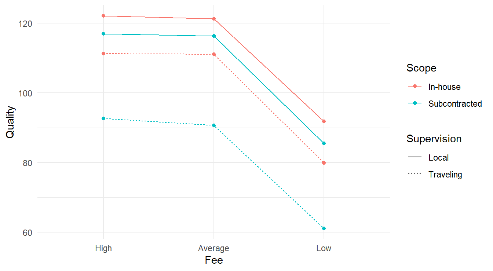
Figure 4.1: Interaction plot for the 3-factor experiment looking at consulting quality as a function of fee, scope and supervision.
From Figure 4.1 it appears the High and Average fee types have the highest quality regardless of scope & supervision. We also see that the Fee type may not interact with the Scope and Supervision variables as all four lines look reasonably parallel. The connection between Scope and Supervision is more complex; note the alternating colors when looking at the lines while the linetypes do not alternate in the same way. This may be an indication of some sort of interaction between these two variables.
4.1.2.2 Fitting a three-factor model
We fit the three-way ANOVA model.
Here we used the notation Fee*Scope*Supervision so R will fit a full factorial model (that is, all main effects and interaction terms).
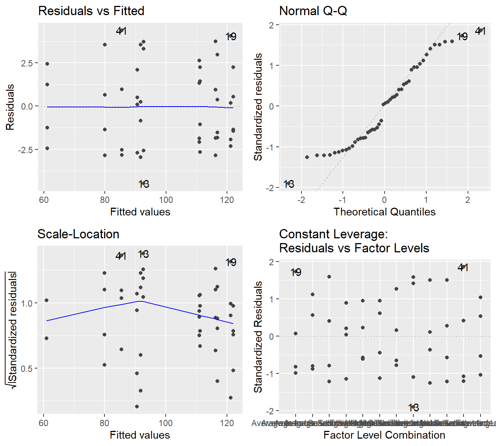
Figure 4.2: Residual plots for the Three-Way ANOVA studying the twelve unique treatments on the quality of consultants - Top-left a Residuals vs Fitted Plot; Top-right a Normal Q-Q plot of the residuals; Bottom-left the Scale-Location plot; and Bottom-right a Residuals vs Leverage plot.
The residual plot in 4.2 shows that the constant variance assumption is generally met (no concerning patterns in either the Residuals vs Fitted or Scale-Location plot). The Normal Q-Q plot does show some deviation from the 45-degree line but here we must make note of how it deviates.
- We see deviation in both tails
- The observed or sample residuals generally have smaller \(Z\)-scores than is expected (all in the \((-2,2)\) range), this indicates the data is light tailed (less data in the extremes of the distribution).
- The two points above tells us the deviations are light tailed and symmetric (that is, roughly equally distributed in both tails).
Given we have no skewness and the data is light tailed, the central limit theorem can justify the use of ANOVA in this setting. That is, even if the residuals are not exactly normally distributed, the sample size is adequate to provide some justification to the result.
Now look at the ANOVA output.
## Df Sum Sq Mean Sq F value Pr(>F)
## Fee 2 10044 5022 679.34 < 2e-16 ***
## Scope 1 1834 1834 248.08 < 2e-16 ***
## Supervision 1 3832 3832 518.40 < 2e-16 ***
## Fee:Scope 2 2 1 0.11 0.90
## Fee:Supervision 2 1 0 0.05 0.95
## Scope:Supervision 1 575 575 77.75 1.6e-10 ***
## Fee:Scope:Supervision 2 4 2 0.27 0.77
## Residuals 36 266 7
## ---
## Signif. codes: 0 '***' 0.001 '**' 0.01 '*' 0.05 '.' 0.1 ' ' 1Similar to the two-factor analysis, always look at the most complex interaction term first.
Here the most complex term is the Fee:Scope:Superversion term.
That three factor interaction term is not significant (\(F\)-statistic of 0.267 on 2 and 36 degrees of freedom, \(p\)-value=0.767), thus we can proceed to the pairwise interactions.
- The interaction between Scope and Supervision is significant (\(F\)-stat of 77.749 on 1 and 36 degrees of freedom, \(p\)-value\(\approx 10^{-10}\)).
- Thus, we cannot make meaningful inference on the main effects of scope and supervision.
- Both interaction terms involving the Fee level factor are not significant
- The
Fee:Scopeterm is not significant (\(F\)-stat of 0.108 on 2 and 36 degrees of freedom, \(p\)-value=0.898) - The
Fee:Supervisionterm is not significant (\(F\)-stat of 0.053 on 2 and 36 degrees of freedom, \(p\)-value=0.948),
- The
Since the interaction of the Fee variable with any other factor variable does not appear to significantly influence the response, we can analyze the main effect of the Fee variable. The Fee main effect influences the quality (\(F\)-stat of 679.336 on 2 and 36 degrees of freedom, \(p\)-value\(\approx10^{-16}\)).
Overall, we can conclude that some combination of Scope and Supervision influence quality. We also conclude that the different Fee types appear to influence Quality.
4.1.2.3 Multiple comparisons
In general, multiple comparisons analysis can get very complicated when three or more factors are involved. In this case, we get lucky
Feeis significant, but only as a main effect.- The
Scope&Supervisioninteraction term is significant, but that interaction term only involves 2 variables and we covered that analysis in section 3.2.3.- Further, there are only \(2\times 2=4\) unique combinations of those four.
First we consider the effects of Fee on the quality index
## NOTE: Results may be misleading due to involvement in interactions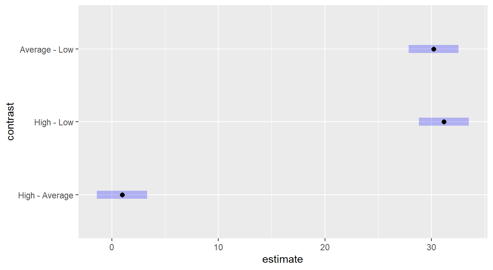
Figure 4.3: Tukey HSD comparison of three levels of the Fee variable on consultant quality. The Low fee option results in a lower quality than High or Average, which statistically are equivalent.
Figure 4.3 provides intervals for pairwise comparisons of the fee levels, so we look for the inclusion or exclusion of the value zero. We see that the “Low” fee level is statistically different than both “High” and “Average”, while the later two are not statistically different.
To analyze the Scope & Supervision influence on Quality we must do so conditionally. This can be achieved by using the conditional comparisons we saw in Chapter 2, section 3.2.3.
## NOTE: Results may be misleading due to involvement in interactions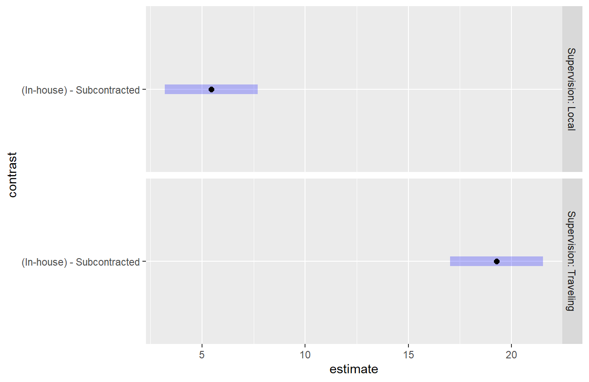
Figure 4.4: Tukey HSD comparison of two levels of the Scope variable on consultant quality conditioned on Supervision. In both settings of supervision, the In-house scope results in a higher quality than subcontracted. It also appears this difference is greater when Traveling Supervision is used.
Figure 4.4 provides interval comparisons for the scope variable within each supervision level. Note that since there are only 2 levels within scope, a single comparison is made within each supervision level (also only two). Since neither interval contains the value zero it is clear that the is a difference between the in-house and subcontracted scope values. Furthermore, we see that the supervision term influences these results as the difference is greater for Traveling supervision.
4.1.2.4 Reformulated for multiple comparisons
Figure 4.4 provides the comparison of the Scope variable conditioned on the Supervisor variable. Each of those factor variables has 2 levels and there are \(2\times 2=4\) total treatments. If you wished to compare all 4 of those treatments levels, you can use can use the ideas of Section 3.2.4 and reformulate the model by combining some factor variables. We start by creating a new variable that combines the Scope and Supervision variables
marketing <- marketing |>
mutate(ScopeSupervision = paste(Scope, Supervision))
unique(marketing$ScopeSupervision)## [1] "In-house Local" "In-house Traveling"
## [3] "Subcontracted Local" "Subcontracted Traveling"Similar to the methods in section 3.2.4, the code above creates a new variable called ScopeSupervision that is the two factor variables, Scope and Supervision pasted together resulting in the four unique treatments of those variables.
We can then refit the model using this alternative formulation.
We take a moment to highlight that this ANOVA table encompasses the previous results.
All values on the Residuals row matches, the main effects on Fee match the previous result.
Now, the ScopeSupervision row is the main effect of the two conjoined variables - note that the degrees of freedom for Scope, Supervsion and Scope:Supervision in the previous result were each 1, and sum to 3; the Sum Sq for each of those three terms sums to new value \(6241\).
The interaction term is not significant which matches our previous result that the effects of Fee on quality did not interact with either the Scope or Supervision variables.
We can proceed with a multiple comparison all 4 unique treatments involving Scope and Supervision in Figure 4.5.
We tell emmeans() to conduct a Tukey test on all pairwise comparisons.
## NOTE: Results may be misleading due to involvement in interactions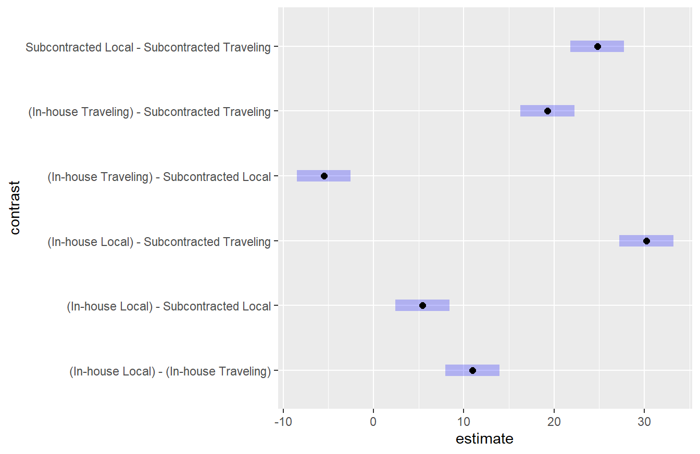
Figure 4.5: Tukey HSD comparison of four unique treatments corresponding to the two levels of the Scope variable and two levels of the Supervision variable. Here we see that all unique treatments result in a different quality level. This is consistent with the findings above.
Figure 4.5 shows that all four treatments for Scope and Supervision result in different quality values. The greatest difference is the In-house scope with Local Supervision compared to the Subcontracted Traveling Supervision. This is consistent with the conditional results which showed the difference between in-house and subcontracted depended on the supervision variable. With this formulation of the model, we can gain some further insight into these differences.
4.1.3 Summarizing higher order factors
The example above provides a illustration of a higher order factorial model and the complexities involved in its analysis. If you come across a design this complex, it is recommended you work with a statistician as most have been trained in the analysis of designed experiments. But if you must, a few key things to remember:
- Always start with the most complex interaction term in the model.
- When interaction terms are not significant, you can work down to lower order interactions and the main effects.
- Multiple comparisons involving interactions must be done conditionally or with a reformulated model.
4.2 Combining Blocks and Factorial Models
In the previous chapter we introduced multiple inputs into a model, one of which could be a block term. Coupled with the three factor example above, it should seem fairly straightforward to combine the ideas of blocking and factorial design into a single model. Below we provide an example of a two-factor design that also includes a block term.
4.2.1 Two-factor with Block Example
Example. Dental Pain treatments (Kutner et al. (2004)).
An anesthesiologist conducted a comparative study of the effects of acupuncture and codeine on postoperative dental pain in male subjects. For acupuncture, patients were provide two inactive acupuncture points or two active acupuncture points. For the codeine treatments, patients were provided with a sugar pill or a codeine capsule. Thirty-two patients were grouped into eight groups according to an initial evaluation of their level of pain tolerance as part of this study. Subjects in each group were then randomly assigned to one of the four unique treatments and a pain relief score was recorded for all subjects two hours after the initial treatment where the higher the value the more effective the treatment.
Original Data Source: Sung et al. (1977)
Before we conduct the analysis we take a moment to recap some of the design features in this study. Here, we have two factor variables, each with two levels, so there are \(2\times 2=4\) treatments. Furthermore, the level of pain tolerance can be considered a confounding effect to the study, but the the experimenter has put patients into groups, or blocks, with similar pain tolerances. Thus, we have a \(2\times 2\) with a block term experiment.
The data are provided in the file dentalPain.csv in the textbook repository.
In that file, everything is coded numerically:
- The acupuncture variable is recorded as 1 and 2 in the data file for inactive and active acupuncture points, respectively.
- The codeine variable is recorded as 1 and 2 for sugar pill and codeine capsule, respectively.
- The block term, level of pain tolerance, is recorded numerically \(1,\ldots,8\).
dentalPain <- read_csv("https://tjfisher19.github.io/introStatModeling/data/dentalPain.csv")
glimpse(dentalPain)## Rows: 32
## Columns: 4
## $ PainLevel <dbl> 1, 1, 1, 1, 2, 2, 2, 2, 3, 3, 3, 3, 4, 4, 4, 4, 5, 5, 5, 5…
## $ Codeine <dbl> 1, 2, 1, 2, 1, 2, 1, 2, 1, 2, 1, 2, 1, 2, 1, 2, 1, 2, 1, 2…
## $ Acupuncture <dbl> 1, 1, 2, 2, 1, 1, 2, 2, 1, 1, 2, 2, 1, 1, 2, 2, 1, 1, 2, 2…
## $ Relief <dbl> 0.0, 0.5, 0.6, 1.2, 0.3, 0.6, 0.7, 1.3, 0.4, 0.8, 0.8, 1.6…Before proceeding with an analysis, we perform some data handling to clean up the factor variables and add appropriate labels.
4.2.2 EDA for two-factor with block
As described above, there are two factor levels and we are interested in the \(2\times 2=4\) unique treatments in this study, but there is also a block term.
Unlike the previous example, we are not interested in the interaction of all the variables since the level of pain tolerance is a block term.
An exploratory data analysis can be tricky here – in a \(2\times 2\) design we can make a simple interactions plot, but here we also have 8 block terms.
Fortunately, since we only have 4 unique treatments, we can reformulate the data into a One-way model with a block term and treat it as in section @ref{blockingSection} of the text.
Below we create a new Treatment variable as we did in Section 3.2.4. Here we specify the \n variable to separate the two character strings that are being pasted together.
The \n is a special escape character that will print a new line in some of our output.
dentalPain <- dentalPain |>
mutate(Treatment = paste(Codeine, Acupuncture, sep="\n"),
Treatment = factor(Treatment,
levels=c("Sugar Pill\nInactive Acupuncture",
"Sugar Pill\nActive Acupuncture",
"Codeine Capsule\nInactive Acupuncture",
"Codeine Capsule\nActive Acupuncture") ) )Now, we can make a profile plot as we have seen before. In Figure 4.6 we have a profile plot of pain relief scores across 4 unique treatments for each of the 8 groups.
ggplot(dentalPain,
aes(x=Treatment, y=Relief,
group=PainLevel)) +
geom_line(color="gray30" ) +
stat_summary(fun="mean", geom="line", group=0,
color="navy", linewidth=2) +
labs(x="Treatment Plan", y="Pain Relief Score") +
theme_minimal()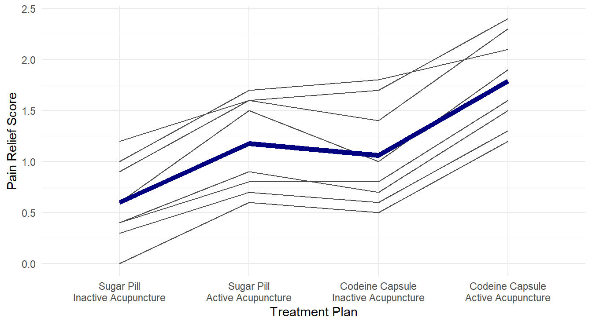
Figure 4.6: Profiles of pain relif scores for each unique combination of acupuncture and codeine treatments across each of the 8 level of pain tolerance..
From Figure 4.6, it visually appears that the group receiving both active acupuncture and codeine report the highest pain relief scores. We can formally check this with ANOVA.
4.2.3 Fitting two-factor with block model
Recall, we have two factor variables and a block term, we use a formula of the form: response ~ block + factor1*factor2.
We check the model diagnostic plots to look for violations in our underlying assumptions as seen in Figure 4.7.
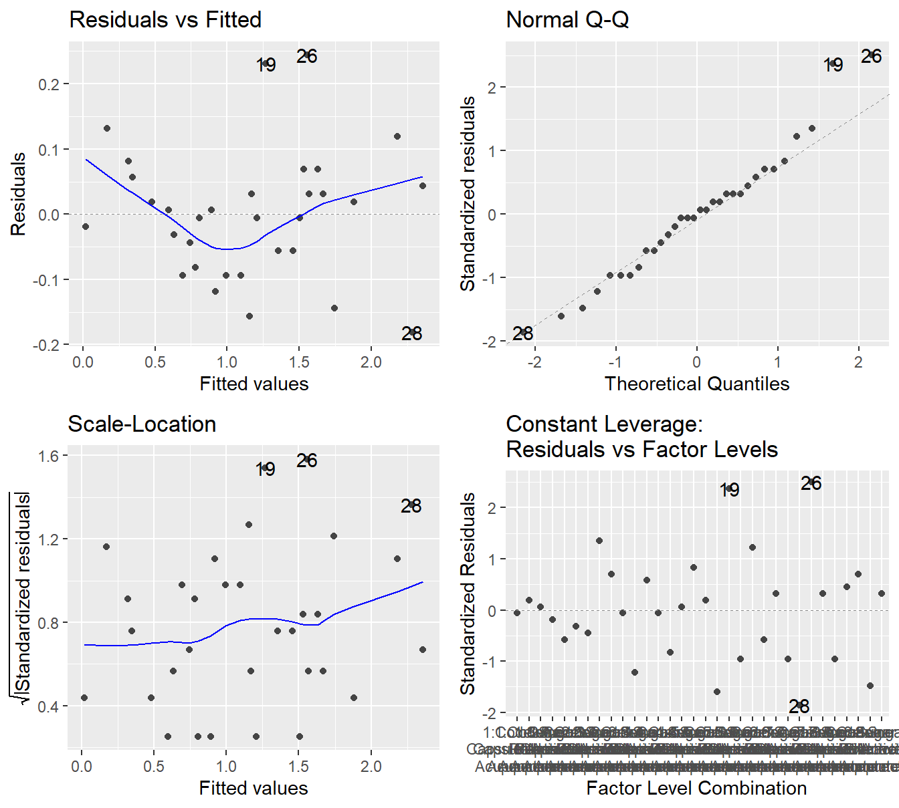
Figure 4.7: Residual diagnostic plots when the response variable is pain relief scores a function of pain tolerance and the treatments of acupuncture and codeine. Here, the Residuals vs Fitted and Scale-Location plots may suggest unequal variance. The Normal Q-Q plot may suggest that the residuals are slightly skewed to the right.
The results in Figure 4.7 are far from textbook. In the Residuals vs Fitted plot and Scale-Location, there does appear to be some evidence that the variability is increasing with the fitted value. The Q-Q plot shows some deviation (albeit with not very large \(Z\)-scores) from Normality and it would suggest some minor skewness.
In situations like this, there is no clear step to take. We can try a transformation such a logarithm, but first note that the very first observation in the data has a zero response.
## # A tibble: 1 × 5
## PainLevel Codeine Acupuncture Relief Treatment
## <fct> <fct> <fct> <dbl> <fct>
## 1 1 Sugar Pill Inactive Acupuncture 0 "Sugar Pill\nInactive Acupun…The value \(\log_{10}(0)\) is undefined. When this happens, we can essentially trick a transformation to occur by adding some value to force the data to be strictly positive. It is customary to add 1 to the value of response which guarantees all response values are greater than or equal to 1. Also \(\log_{10}(1) = 0\) so any zero values in the original units are zero on the log-scale. We perform a log-base 10 of the response plus one.
logDentalpain.anova <- aov(log10(Relief+1) ~ PainLevel + Codeine*Acupuncture,
data=dentalPain)
autoplot(logDentalpain.anova)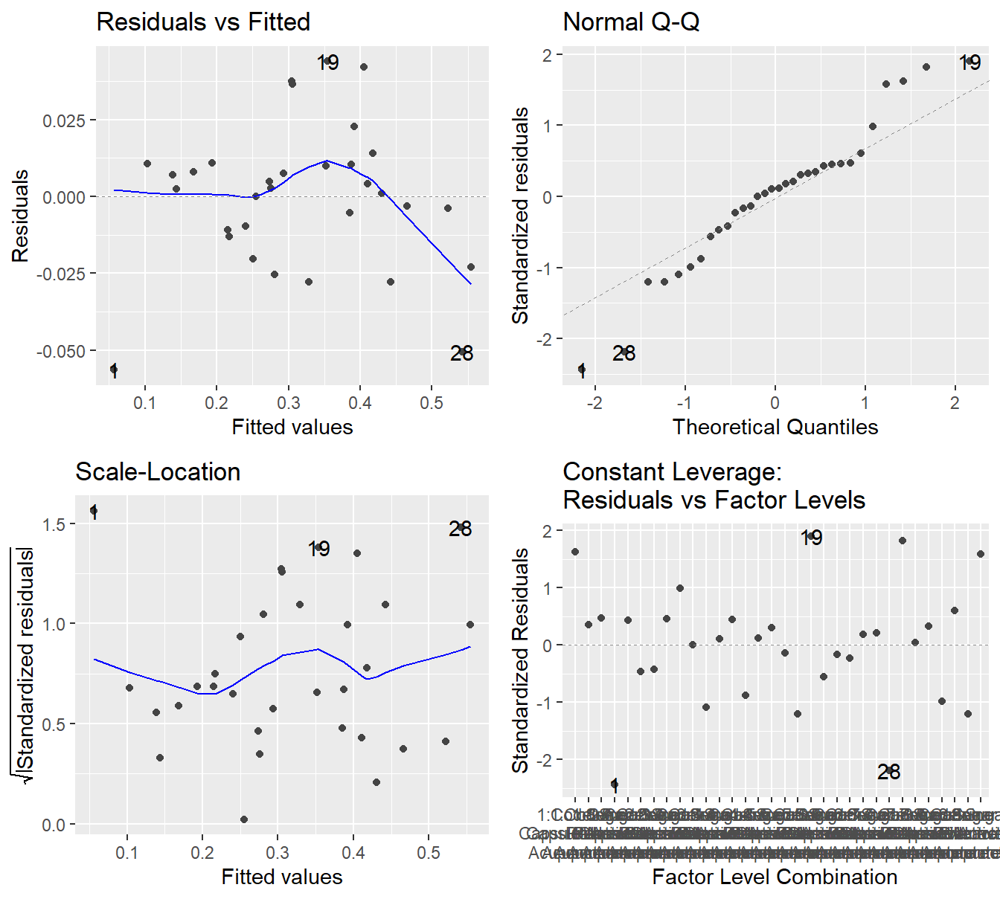
Figure 4.8: Residual diagnostic plots when the response variable is pain relief scores a function of pain tolerance and the treatments of acupuncture and codeine. Here, the residuals appear fairly homoskedastic based on the Residuals vs Fitted and Scale-Location plots. The residuals may not be Normally distributed as there is deviation in both tails.
Figure @(fig:dentalPainResiduals2) shows maybe some improvement in the variability assumption. Specifically, the Scale-Location plot no longer shows a slight increase in variability with respect to the fitted values. However, the Q-Q plot may suggest more deviation from the Normality assumption after the transformation. So it is not entirely clear if a transformation is helpful.
In situations such as these, it is likely best to use the original data. Transforming a response comes with some cost – we lose some contextual interpretation. So we should always asks ourselves if that cost is worth any improvement we see in the model assumptions. Here, it is not clear transforming the response helps with our model assumption, so we will use the model fit on the original response.
## Df Sum Sq Mean Sq F value Pr(>F)
## PainLevel 7 5.60 0.80 55.30 4.1e-12 ***
## Codeine 1 2.31 2.31 159.79 2.8e-11 ***
## Acupuncture 1 3.38 3.38 233.68 7.5e-13 ***
## Codeine:Acupuncture 1 0.05 0.05 3.11 0.092 .
## Residuals 21 0.30 0.01
## ---
## Signif. codes: 0 '***' 0.001 '**' 0.01 '*' 0.05 '.' 0.1 ' ' 1Recall, we look at the most complex interaction term first; here Codeine:Acupuncture.
With an \(F\)-stat of 3.11 on 1 and 21 degrees of freedom (\(p\)-value = 0.0923), we do not have evidence that the effects of codeine on pain relief depends on the acupuncture treatment.
That first result allows us to look at the main effects:
- With an \(F\)-stat of 160 on 1 and 21 degrees of freedom (\(p\)-value\(\approx 10^{-11}\)), we have conclusive evidence that a codeine capsule influences the pain relief score.
- With an \(F\)-stat of 234 on 1 and 21 degrees of freedom (\(p\)-value\(\approx 10^{-13}\)), we have conclusive evidence that the acupuncture treatment influences the pain relief score.
4.2.4 Multiple comparisons
So we have concluded that both Acupunture and Codeine appear to influence pain relief, and that they do not necessarily interact (that is, the influence of one on the response does not necessarily depend on the other). What remains to be see, is how these treatments influence the response? You should also note that this experiment includes a natural control group (Sugar pill and inactive acupuncture). So a Dunnett’s multiple comparison method is appropriate.
Following the example in Section 3.2.4 we refit the model as a One-Way block model with the \(2\times 2=4\) unique treatments. Note that residual analysis are not needed here because this is the same underlying model as above, just formulated a little differently.
dentalPain.anova2 <- aov(Relief ~ PainLevel + Treatment,
data=dentalPain)
summary(dentalPain.anova2)## Df Sum Sq Mean Sq F value Pr(>F)
## PainLevel 7 5.60 0.800 55.3 4.1e-12 ***
## Treatment 3 5.74 1.912 132.2 8.6e-14 ***
## Residuals 21 0.30 0.014
## ---
## Signif. codes: 0 '***' 0.001 '**' 0.01 '*' 0.05 '.' 0.1 ' ' 1Not surprisingly, with an \(F\)-stat of 132.2 on 3 and 21 degrees of freedom (\(p\)-value\(\approx 10^{-14}\)) we have evidence that the different treatment influence pain relief scores.
Note that the PainLevel and Residuals lines match the previous table.
Here, the effects of Codeine, Acupuncture and their interaction have been combined into the new variable Treatment.
In a previous code chunk (for building the profile plot in Figure 4.6) we already re-ordered the treatment levels so the control group is the first factor level. Below we provide code to perform the multiple comparisons.
dental.em <- emmeans(dentalPain.anova2, ~Treatment)
plot(contrast(dental.em, "dunnett", ref=1)) +
theme_minimal() +
labs(x="Difference in Pain Relief Scores",
y="")![Dunnett adjusted confidence interval plots comparing the three treatments against the control. Here, all three treatments are significantly different than the control. Both a Codeine Capsule and Acupunture treatments alone improve pain relief scores by about 0.5 units, while when both are utilize pain relief scores improve by about 1.2 units. Self-induced treatment is not statistically different than the control (zero is in the interval) while the Therapist based treatment results in significantly more weight loss than the control.](introStatModeling_files/figure-html/dentalPainMultComp-1.png)
Figure 4.9: Dunnett adjusted confidence interval plots comparing the three treatments against the control. Here, all three treatments are significantly different than the control. Both a Codeine Capsule and Acupunture treatments alone improve pain relief scores by about 0.5 units, while when both are utilize pain relief scores improve by about 1.2 units. Self-induced treatment is not statistically different than the control (zero is in the interval) while the Therapist based treatment results in significantly more weight loss than the control.
The results in Figure 4.9 show that all three treatment are statistically different than the control. This is not too surprising given the results of the ANOVA results above – the interaction term was not significant but both main effects were. That implies that the introduction of Codeine compared to a sugar pill will have an effect and that active acupuncture will also have an effect compared to inactive acupuncture. When both Codeine and Active acupuncture are used, we see a greater effect as compared to each (in fact, you’ll note in Figure 4.9 that the difference with of both Codeine and Acupuncture is about the summation of differences for each treatment on its own).
4.3 Within-subject designs
In these chapters covering experimental design, we have seen different designs where factor(s) levels are manipulated by the researcher in order to measure a response. In simpler design settings, the factors that are manipulated are of the “between-subjects” type. For example, Section 4.2.1 provides a two-factor example on pain relief where each participant (experimental unit) had exactly one treatment randomly assigned to them. As such, there is only one observation per experimental unit in that design. The different treatments are a between-subjects factor.
Why is that important to note?
One of the key underlying assumptions in statistical methods is the independence assumption. When the treatments are between-subject factors, this essentially assures that the observations in the data are all independent. In Section 2.5 we highlighted that independence is the most important assumption for statistical analysis. In fact, independence is more important to inference validity than either normality or constant variance assumptions.
Now, contrast this with the paired \(t\)-test (see Section 3.1.3 for an example). A hypothetical example was discussed that involved giving a sample of 20 people a drug treatment in order to study its effect on the Cholesterol of the patients. Think of that problem from a design of experiments point of view: what is the factor(s) that is manipulated by the researcher?
- It is not the drug treatment! In the experiment only one drug was studied: there was no “comparison” drug or placebo used to form a basis for comparison. As such, the drug treatment in that problem was not a variable at all: it was a constant. All patients received it.
- So what did the experimenter determine? The answer is TIME. The researcher measured Cholesterol at two time points on each patient (experimental unit): [1] just before the start of the drug treatment, and [2] 45 days later. The factor here is time, and it has two levels. Here, we say Time is a within-subject factor.
The important thing to recognize here is that each patient provided two observations, not one. It stands to reason that what a particular subject’s Cholesterol is after 45 days will be related to their starting Cholesterol before the drug treatment. That is the layman’s way of saying that the measurements within a subject are not independent (i.e., a patient is not independent of themselves – the two observations are correlated). If in any analysis we ignored this basic truth, that analysis would be seriously flawed.
So how did we handle this before? A simple strategy which is common with paired data comparisons is to calculate each subject’s difference score (yielding a single difference measurement per subject) and then performing a one-sample \(t\)-test on the differences. Each difference score is independent because each came from a different person (or subject). This is what is done in the paired \(t\)-test analysis in section 3.1.3.
In general, calculating differences is not always feasible – what would you calculate if an experimenter used three timed measurements on each subject? In a designed experiment that involves several measurements made on the same experimental unit over time, the design is called a repeated measures design and we will build up to it.
4.3.1 Blocks revisited: an approach to handling within-subjects factors
The notion and purpose of blocking in an experimental design was introduced in section 3.1. Recall the definition of block terms as a relatively homogeneously set of experimental material. We saw multiple examples where subjects serve as blocks. This informs us that using a block design approach in analysis is ‘a way’ to handle correlated (non-independent) observations. We illustrate that here by revisiting the data example from Section 3.1.3.
Example. Carbon Emissions (originally in Weiss (2012)).
The makers of the MAGNETIZER Engine Energizer System (EES) claim that it improves the gas mileage and reduces emissions in automobiles by using magnetic free energy to increase the amount of oxygen in the fuel for greater combustion efficiency.
Test results for 14 vehicles that underwent testing is available in the file carCOemissions.csv.
The data includes the emitted carbon monoxide (CO) levels, in parts per million, of each of the 14 vehicles tested before and after installation of the EES.
This is a classic before-after (Paired design) study. Below is some code to implement the test.
First, we quickly recap the Paired \(t\)-test result from Section 3.1.3.
www <- "https://tjfisher19.github.io/introStatModeling/data/carCOemissions.csv"
vehicleCO <- read_csv(www, col_types = cols())
vehicleCO## # A tibble: 14 × 3
## id before after
## <dbl> <dbl> <dbl>
## 1 1 1.6 0.15
## 2 2 0.3 0.2
## 3 3 3.8 2.8
## 4 4 6.2 3.6
## 5 5 3.6 1
## 6 6 1.5 0.5
## 7 7 2 1.6
## 8 8 2.6 1.6
## 9 9 0.15 0.06
## 10 10 0.06 0.16
## 11 11 0.6 0.35
## 12 12 0.03 0.01
## 13 13 0.1 0
## 14 14 0.19 0and the paired \(t\)-test
##
## Paired t-test
##
## data: vehicleCO$before and vehicleCO$after
## t = 3.146, df = 13, p-value = 0.00773
## alternative hypothesis: true mean difference is not equal to 0
## 95 percent confidence interval:
## 0.239443 1.289129
## sample estimates:
## mean difference
## 0.764286Now, we will perform this same analysis using a Block ANOVA. The data is structure that 2 observations (the before and after) are on each row of the data frame. We reshape this data into a tall, or long, format.
vehicleCO_tall <- vehicleCO |>
pivot_longer(cols=c(before, after),
names_to="Time",
values_to="Emitted_CO")
head(vehicleCO_tall)## # A tibble: 6 × 3
## id Time Emitted_CO
## <dbl> <chr> <dbl>
## 1 1 before 1.6
## 2 1 after 0.15
## 3 2 before 0.3
## 4 2 after 0.2
## 5 3 before 3.8
## 6 3 after 2.8Note the difference in the layout of the data here as compared to the original vehicleCO used in the paired \(t\)-test: each observation occupies a single row of the data file now.
There is an identifier variable (id) that identifies which subject every observation belongs to.
The variable Time refers to the time factor and Emitted_CO records the emitted Carbon Monoxide levels (ppm).
We will analyze this same data (addressing the same research question) by using a block design approach:
vehicleco.block.aov <- aov(Emitted_CO ~ factor(id) + Time, data=vehicleCO_tall)
summary(vehicleco.block.aov)## Df Sum Sq Mean Sq F value Pr(>F)
## factor(id) 13 56.7 4.36 10.6 7.2e-05 ***
## Time 1 4.1 4.09 9.9 0.0077 **
## Residuals 13 5.4 0.41
## ---
## Signif. codes: 0 '***' 0.001 '**' 0.01 '*' 0.05 '.' 0.1 ' ' 1Look at the \(F\)-test for the time factor (labeled Time here).
This result is identical to the result of the paired t-test above (\(F\) = 9.897, \(\textrm{df}_1\) = 1, \(\textrm{df}_2\) = 13, \(p\)-value \(= 0.00773\)).
Note, \(\sqrt{9.897} =\) 3.146, the value of the paired \(t\)-test statistic.
How does the block approach work here? Note that the test of Time (the within subjects effect) uses the residual effect as the error term. Because the blocks are included in the model (and here, the blocks constitutes the overall between-subjects, or between-vehicles, variability source), the only variation left over for the “residuals” is the variability due to the within-vehicle differences. In essence, there are two components to the random error now:
- Aggregated variability between vehicles (block effect)
- Remaining unexplained (random) variability after accounting for aggregate vehicle-to-vehicle differences and aggregated time-to-time differences. We will call this leftover stuff “pure” error.
For a correct analysis, it is important that each factor of interest in the study be tested against the proper component of the error. Here, we test a within-subjects effect against the random error component dealing with “pure” random error.
A more general approach to within-subjects analysis is to specify to R that there are layers of random variability in the data introduced by the fact that we have more than one measurement per experimental unit.
This can be done using a model specification that explicitly cites these layers with an Error.
The model specification in R is generally
`response ~ between-subjects factor structure + Error(EU variable/within-subjects factor)`In the working example, our model formulation will look like this:
##
## Error: factor(id)
## Df Sum Sq Mean Sq F value Pr(>F)
## Residuals 13 56.7 4.36
##
## Error: factor(id):Time
## Df Sum Sq Mean Sq F value Pr(>F)
## Time 1 4.09 4.09 9.9 0.0077 **
## Residuals 13 5.37 0.41
## ---
## Signif. codes: 0 '***' 0.001 '**' 0.01 '*' 0.05 '.' 0.1 ' ' 1The overall output looks a little different but in the end, we get the same result (\(F\)-stat of 4.089 on 1 and 13 degrees of freedom, \(p\)-value=0.00773). In more complex studies this general approach is preferred.
4.3.2 Repeated Measures Case Study
If we can handle within-subjects factors using blocks, why not just stick with that all the time?
Well, the reason is that repeated measures designs can get complicated: multiple time measurement points (more than just two), the addition of between-subjects factors, perhaps other block terms, etc…
The following case study example illustrates this.
Example. Cholesterol study (from the University of Sheffield (Sheffield, 2021)).
A study tested whether cholesterol was reduced after using a certain brand of margarine as part of a low fat, low cholesterol diet. The subjects consumed on average 2.31g of the active ingredient, stanol ester, a day. This data set cholesterolreduction.csv contains information on 18 people using margarine to reduce cholesterol over three time points.
The variables in the data can be summarized as follows:
| Variable Name | Variable | Data type |
|---|---|---|
| ID | Participant Number | |
| Before | Cholesterol before the diet (mmol/L) | Scale |
| After4weeks | Cholesterol after 4 weeks on diet (mmol/L) | Scale |
| After8weeks | Cholesterol after 8 weeks on diet (mmol/L) | Scale |
| Margarine | Margarine type A or B | Binary |
We input the data from the book repository.
"carCOemissions.csv"
chol <- read_csv("https://tjfisher19.github.io/introStatModeling/data/cholesterolreduction.csv", col_types=cols())
glimpse(chol)## Rows: 18
## Columns: 5
## $ ID <dbl> 1, 2, 3, 4, 5, 6, 7, 8, 9, 10, 11, 12, 13, 14, 15, 16, 17,…
## $ Before <dbl> 6.42, 6.76, 6.56, 4.80, 8.43, 7.49, 8.05, 5.05, 5.77, 3.91…
## $ After4weeks <dbl> 5.83, 6.20, 5.83, 4.27, 7.71, 7.12, 7.25, 4.63, 5.31, 3.70…
## $ After8weeks <dbl> 5.75, 6.13, 5.71, 4.15, 7.67, 7.05, 7.10, 4.67, 5.33, 3.66…
## $ Margarine <chr> "B", "A", "B", "A", "B", "A", "B", "A", "B", "A", "B", "B"…Note that in this experiment there are two factors of interest:
- Time (3 levels within-subjects): before, after4weeks, after8weeks)
- Margarine type (2 level between-subjects): A or B
The data is provided in wide format that may be easy for humans to read but we need to convert it to tall form:
chol_tall <- chol |>
pivot_longer(cols=Before:After8weeks,
names_to="time.pt",
values_to="chol.level")
head(chol_tall)## # A tibble: 6 × 4
## ID Margarine time.pt chol.level
## <dbl> <chr> <chr> <dbl>
## 1 1 B Before 6.42
## 2 1 B After4weeks 5.83
## 3 1 B After8weeks 5.75
## 4 2 A Before 6.76
## 5 2 A After4weeks 6.2
## 6 2 A After8weeks 6.13chol_tall <- chol_tall |>
mutate(time.pt = factor(time.pt,
levels=c("Before", "After4weeks", "After8weeks"),
labels=c("Before", "After 4 weeks", "After 8 weeks")))We have changed the variable time.pt to be a factor variable and we order the levels so they are contextually sequential (rather than alphabetical order).
4.3.2.1 Exploratory Data Analysis
We can now perform an EDA. A table of descriptive statistics by combinations of time and margarine group is our first cut:
chol.summary <- chol_tall |>
group_by(Margarine, time.pt) |>
summarise(Mean = mean(chol.level),
SD = sd(chol.level),
SE = sd(chol.level)/sqrt(length(chol.level)),
n = length(chol.level))
kable(chol.summary)| Margarine | time.pt | Mean | SD | SE | n |
|---|---|---|---|---|---|
| A | Before | 6.03556 | 1.363232 | 0.454411 | 9 |
| A | After 4 weeks | 5.55000 | 1.320672 | 0.440224 | 9 |
| A | After 8 weeks | 5.48889 | 1.307282 | 0.435761 | 9 |
| B | Before | 6.78000 | 0.919008 | 0.306336 | 9 |
| B | After 4 weeks | 6.13333 | 0.863713 | 0.287904 | 9 |
| B | After 8 weeks | 6.06889 | 0.825825 | 0.275275 | 9 |
We generally observe that cholesterol levels with margarine A appear lower than with margarine B. Also, there does appear to be some reduction in cholesterol level using both products: however, there also appears to be more unexplained variability (“noise”) in the cholesterol measurements under margarine A. We can further check this using some data visualizations.
First let us try boxplots (not appropriate given the design) as seen in Figure 4.10.
ggplot(chol_tall) +
geom_boxplot(aes(x=time.pt, y=chol.level)) +
facet_wrap(~Margarine) +
xlab("Time Point of Measurement") +
ylab("Cholesterol level (mmol/L)")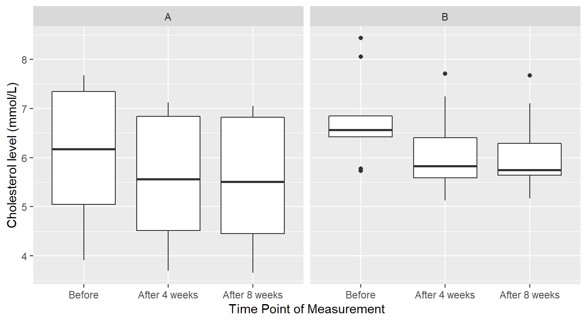
Figure 4.10: Boxplot distribution of the Cholesterol level as a function of Treatment and Time of measurement.
We see in Figure 4.10 that perhaps cholesterol levels are generally more consistent under margarine B, and that it is just some outlier(s) that are the issue. However, this plot does not reveal a crucial piece of information: the responses are correlated over time. A better depiction would allow us to see how each individual subject’s cholesterol changed over the span of the experiment as seen in Figure 4.11.
# Plot the individual-level cholesterol profiles
ggplot(chol_tall, aes(x=time.pt, y=chol.level, colour=Margarine, group=ID)) +
geom_line() +
geom_point(shape=21, fill="white") +
facet_wrap(~Margarine) +
xlab("Time Point of Measurement") +
ylab("Cholesterol level (mmol/L)") +
ggtitle("Subject-level cholesterol profiles by Margarine group")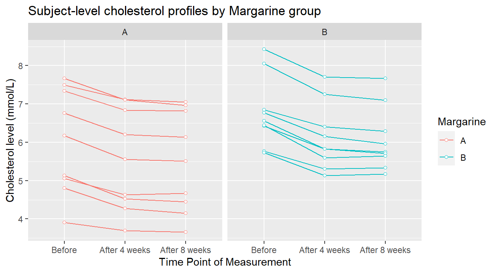
Figure 4.11: Profile plots of the Cholesterol level as a function of Treatment and Time of measurement.
In Figure 4.11 we see some elements more clearly. The general decreasing pattern over time appears to be pretty consistent for every experimental unit (visually, each “line” in the plot). There are two individuals in margarine B whose cholesterol level seems unusually higher than the others: this might warrant further investigation. Now we provide an summary profile of the two treatments in 4.12.
# we include a position_dodge elements to avoid overlap
ggplot(chol.summary, aes(x=time.pt, y=Mean, colour=Margarine)) +
geom_errorbar(aes(ymin=Mean-SE, ymax=Mean+SE), width=.1, position=position_dodge(0.3)) +
geom_line(aes(group=Margarine), position=position_dodge(0.3)) +
geom_point(position=position_dodge(0.3)) +
xlab("Time Point of Measurement") +
ylab("Cholesterol level (mmol/L)") +
ggtitle("Mean Cholesterol level (with Standard Error bars)")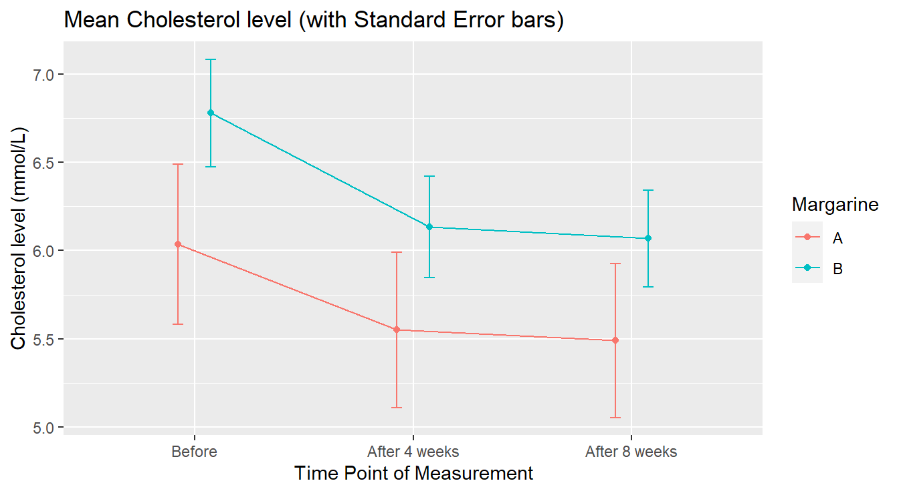
Figure 4.12: Average Profile of Cholesterol level by Treatment in Time.
Note some of the bells and whistles added to Figure 4.12 – error bars are added to each point to provide a measure of variation and dodging was used to separate overlapping lines. Contextually, Figure 4.12 visually shows that margarine A Cholesterol levels appear lower than margarine B. It is worth noting that the group assigned to margarine level A had lower cholesterol “before” the study began.
4.3.2.2 Preliminary inferential analysis
Of more concern to a fully correct analysis is addressing why there appears to be a difference between the margarine groups at the “Before” stage. At that point, no margarine treatments had been administered, so if the subjects had been truly randomly assigned to the margarine groups (as they should be in a properly designed experiment!), we would have expected consistent cholesterol readings between the groups at that point. This can be formally tested as follows, with a simple independent samples \(t\)-test comparing the mean cholesterol levels of the A and B groups at the “Before” stage:
BeforeDataOnly <- chol_tall |>
filter(time.pt == "Before")
t.test(chol.level ~ Margarine, data=BeforeDataOnly, var.equal=TRUE)##
## Two Sample t-test
##
## data: chol.level by Margarine
## t = -1.358, df = 16, p-value = 0.193
## alternative hypothesis: true difference in means between group A and group B is not equal to 0
## 95 percent confidence interval:
## -1.906205 0.417316
## sample estimates:
## mean in group A mean in group B
## 6.03556 6.78000The result is not statistically significant (\(p\)-value = 0.1932). This is actually good news here! Although visually it appears the two treatment groups had different initial cholesterol levels, they were not statistically different.
4.3.2.3 A conditional repeated measures analysis
To better understand the idea of repeated measures, lets consider a simpler within-subjects (repeated measures) ANOVA. We look at the effects of only Margarine A on cholesterol levels in time. The goal here would be to see if there is an effective reduction in mean cholesterol over the eight-week trial by using margarine A. Essentially, this is an extension of the classic Before and After study, but here we have two “after” measurements, for a total of 3 measurements per subject.
MargarineA <- chol_tall |>
filter(Margarine == "A")
RMaov_MargA <- aov(chol.level ~ time.pt + Error(factor(ID)/time.pt), data=MargarineA)
summary(RMaov_MargA)##
## Error: factor(ID)
## Df Sum Sq Mean Sq F value Pr(>F)
## Residuals 8 42.4 5.3
##
## Error: factor(ID):time.pt
## Df Sum Sq Mean Sq F value Pr(>F)
## time.pt 2 1.615 0.808 106 5.8e-10 ***
## Residuals 16 0.122 0.008
## ---
## Signif. codes: 0 '***' 0.001 '**' 0.01 '*' 0.05 '.' 0.1 ' ' 1The test of interest is labeled time.pt. It is significant (\(F\) = 106.3, \(\textrm{df}_1\) = 2, \(\textrm{df}_2\) = 16, \(p\)-value = \(5.7 \times 10^{-10}\)). This tells us that when using Margarine A there is significant evidence to conclude that the true mean cholesterol level differs between at least two of the time points. Of course, that result on its own does not mean that the margarine is effective at reducing cholesterol levels.
All it says is that the mean cholesterol level is changing at some point over the experiment.
Since there are three time points, a multiple comparison procedure is warranted with the output below and in Figure 4.13.
## Note: re-fitting model with sum-to-zero contrasts## contrast estimate SE df t.ratio p.value
## Before - After 4 weeks 0.4856 0.0411 16 11.817 <.0001
## Before - After 8 weeks 0.5467 0.0411 16 13.304 <.0001
## After 4 weeks - After 8 weeks 0.0611 0.0411 16 1.487 0.3229
##
## P value adjustment: tukey method for comparing a family of 3 estimatesFigure 4.13: Comparing the effects of time within the Margarine A treatment groups. We see there is no statistical difference between 4 and 8 weeks after treatment begins but both differ comparied to the initial “before” measure of Cholestorol.
The significant reductions in mean cholesterol level under Margarine A occurs right after the start of the experiment. The mean cholesterol level is reduced by 0.485 (SE = 0.041) by week 4 (\(p\)-value < 0.0001); and by 0.546 (SE = 0.041) by week 8 (\(p\)-value < 0.0001). There is no appreciable change in mean cholesterol level between weeks 4 and 8 (\(p\)-value = 0.3229).
4.3.2.4 Full analysis: Formal Comparison of Margarines
It is critically important to know the structure of the data, which here stems from the design of the experiment.
In this case, we cannot just “compared the margarines” because there is a subject-level time profile under each margarine.
Since the same time points are observed under each margarine group, the factors margarine and time.pt are crossed effects, which means we have a factorial data structure (see section 3.2).
The added wrinkle here is that one of the two factors is a between-subjects factor (Margarine) and the other is within-subjects (time.pt).
This can be handled with a proper formula statement in aov:
RMaov_all <- aov(chol.level ~ Margarine + time.pt + Margarine:time.pt +
Error(factor(ID)/time.pt), data=chol_tall)
summary(RMaov_all)##
## Error: factor(ID)
## Df Sum Sq Mean Sq F value Pr(>F)
## Margarine 1 5.5 5.46 1.45 0.25
## Residuals 16 60.4 3.78
##
## Error: factor(ID):time.pt
## Df Sum Sq Mean Sq F value Pr(>F)
## time.pt 2 4.32 2.160 259.49 <2e-16 ***
## Margarine:time.pt 2 0.08 0.040 4.78 0.015 *
## Residuals 32 0.27 0.008
## ---
## Signif. codes: 0 '***' 0.001 '**' 0.01 '*' 0.05 '.' 0.1 ' ' 1As with the factorial models before, the first thing we must check is the significance of the most complext interaction term. If this is significant, it means that the effect of time on the mean cholesterol is different between the two margarine types. That is the case here (\(F\) = 4.777, \(\textrm{df}_1\) = 2, \(\textrm{df}_2\) = 32, \(p\)-value = 0.0153). As a result, we should must complete multiple comparisons by conditioning on one of the two factors. Experimental context will dictate which of the two factors is the more reasonable to condition on. Here, we choose to condition on Margarine group, so we get a time-based comparison of mean cholesterol levels, but specific to each Margarine group, as seen in Figure 4.14
## Note: re-fitting model with sum-to-zero contrasts## Margarine = A:
## contrast estimate SE df t.ratio p.value
## Before - After 4 weeks 0.4856 0.043 32 11.290 <.0001
## Before - After 8 weeks 0.5467 0.043 32 12.711 <.0001
## After 4 weeks - After 8 weeks 0.0611 0.043 32 1.421 0.3424
##
## Margarine = B:
## contrast estimate SE df t.ratio p.value
## Before - After 4 weeks 0.6467 0.043 32 15.036 <.0001
## Before - After 8 weeks 0.7111 0.043 32 16.535 <.0001
## After 4 weeks - After 8 weeks 0.0644 0.043 32 1.498 0.3051
##
## P value adjustment: tukey method for comparing a family of 3 estimates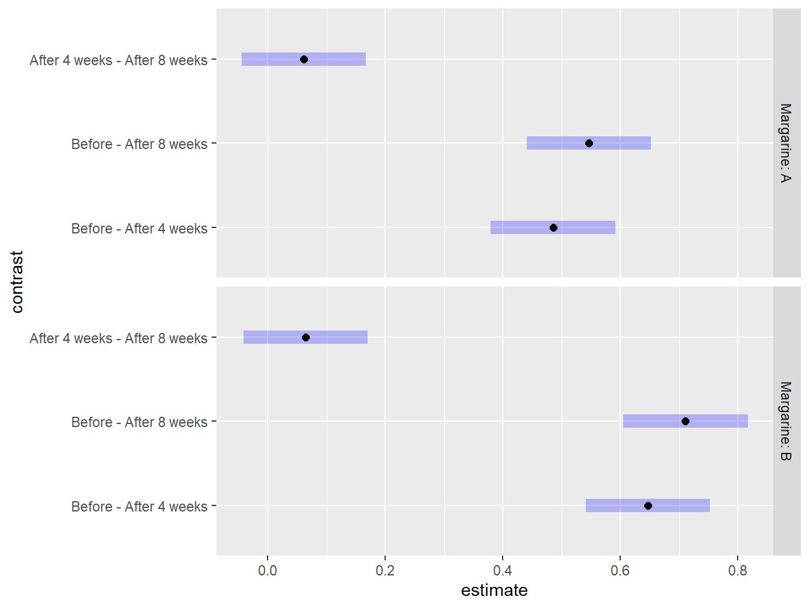
Figure 4.14: Graphical exploration of all treatments noting that there is no statistical difference between 4 and 8 weeks after the study has began regardless of Margarine treatment.
Even though at first glance the time-based comparisons look about the same between the two margarine types (Figure 4.12), the interval estimates and plots reveal the true story: the reductions in mean cholesterol following the initiation of the study are larger for margarine B (mean=0.7111 mmol/L, SE=0.043 by week 8) than for margarine A (mean=0.546 mmol/L, SE=0.043 by week 8).
4.3.3 Further study
More thorough analysis of within-subjects and repeated measures designs are possible using advanced methods beyond the scope of this course. These methods include:
- processes that allow the analyst to estimate the degree of correlation between repeated measurements
- processes that allow one to model different correlation structures based upon experimental realities in the data collection process
For example, suppose we had a repeated measures experiment with subjects measured across four time points: Week 1, 2, 3 and 8. Because of the time spacing, we might expect that measurements between adjacent weeks to be more similar within a subject than weeks far removed in time. That is, it is reasonable to expect that results in week 2 are more strongly correlated to week 1 results than would be the correlation between weeks 3 and 1. Week 8 results might be so far removed from the first few weeks that the results there might be safely presumed to be nearly independent of earlier results. We could even be more restrictive, using an approach that assumes only adjacent time point results are correlated, but beyond that, assume independence.
Subtleties like these can be modeled and checked using advanced modeling techniques.